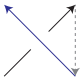
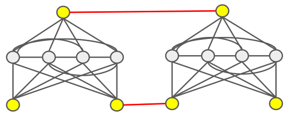
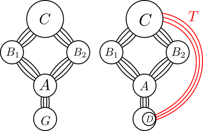
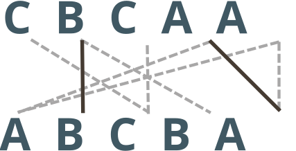
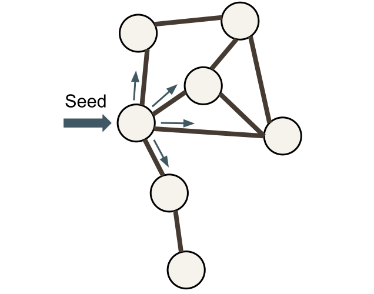

Cross stitching is a fiber art form where the artist uses small “x” stitches to create a design. Typically, cross-stitchers follow a pattern specifying the stitch placement on the front-facing side of the fabric, but little guidance is given on the path one should take to complete these stitches. The objective of this project is to gain insight into path optimization given a cross-stitch pattern (front-facing design) and constraints related to commonly regarded best practices in cross-stitching.

Degeneracy is a measurement of the sparsity of a graph. A graph is k-degenerate if every induced subgraph has a vertex with degree at most k.
Given degeneracies p1, p2,..., ps, we consider the problem of partitioning a graph into s vertex sets V1, V2,..., Vs, where G induced on
Vi is pi-degenerate for all i. We extend the hardness results of Khzam, Feghali, and Heggernes (linked below), proving NP-hardness for any sequence of degeneracy arguments when the max degree of the graph is above a specific threshold.
I designed the construction for the hardness reduction, using a gadget from Khzam, Feghali, and Heggernes.

One important problem in graph analysis is finding important, or well-connected, vertices.
Centrality metrics are one well-studied way to accomplish this. We build off the work of Crane, Friedler, Patel, and Sullivan (linked below).
Given some graph G and budget k, the task is to add at most k edges to G to reduce the disparity in the closeness centralities in G.
We develop a fixed-parameter tractable (FPT) algorithm parameterized by neighborhood diversity, making the problem efficiently solvable on graphs with limited structural diversity.
We also prove that the decision version of this problem is NP-hard.
I designed the algorithm, and I worked closely with another undergraduate to develop the construction for the hardness reduction.

Accessible chromatin regions (ACRs) are genomic regions which contain short, conserved DNA sequences essential to gene regulation.
We've developed a method of computationally predicting ACRs in plant pangenomes using machine learning and co-linear chaining, a well-studied algorithm in bioinformatics.
Given a genome with known coordinates of ACRs, we use co-linear chaining to obtain a similarity score between these ACRs and genomic regions with unknown chromatin accessibility.
We create feature vectors from these scores and use machine learning to classify the region as chromatin accessible or not.
I worked closely with another undergraduate to implement this pipeline, run experiments, and analyze and visualize the results.

We consider the problem of selecting k seed nodes in a graph to maximize the minimum probability of activation under the independent cascade model (a framework to simulate information or disease spread).
We design and evaluate 10 inexact algorithms for this problem which are orders of magnitude faster than the current state-of-the-art, while retaining much of the performance.
I ran the experiments to validate the performance of these algorithms on very large networks.

* = my primary advisor on the project